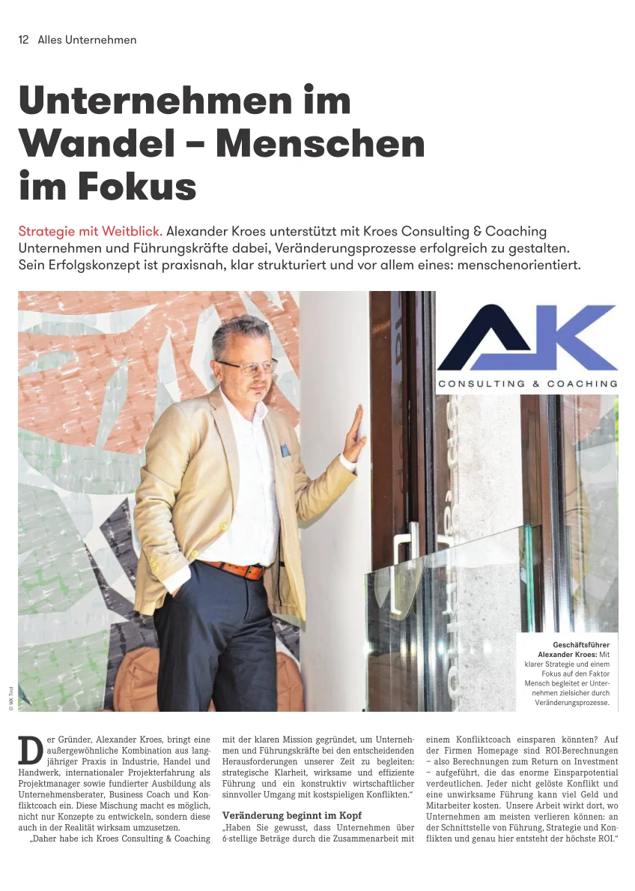

Kroes Consulting – die Menschen im Blick, den Unternehmenserfolg im Sinn
Unternehmensprofil auf openPR mit Einblick in die Beratungsangebote von Alexander Kroes: Führungskräfteentwicklung, Strategie und Konfliktmanagement für KMU und Handwerk.

Berichte, Interviews und Veröffentlichungen über Kroes Consulting & Coaching.
Unternehmensprofil auf openPR mit Einblick in die Beratungsangebote von Alexander Kroes: Führungskräfteentwicklung, Strategie und Konfliktmanagement für KMU und Handwerk.
Im Regionalmagazin „Tiroler Wirtschaft" erscheint ein Bericht über die Beratungsarbeit von Alexander Kroes – mit Fokus auf nachhaltigen Wandel durch Führung, Strategie und Konfliktlösung.

Ich stehe Medien und Redaktionen gerne für Gespräche, Fachbeiträge und Interviews zu Themen wie Unternehmensführung, KMU, Handwerk und Konfliktmanagement zur Verfügung.